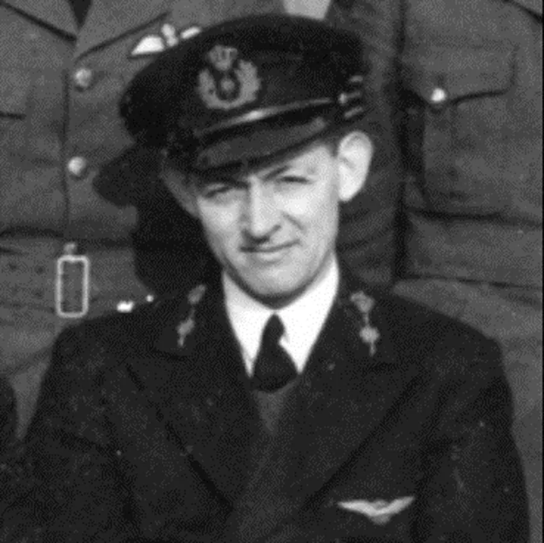
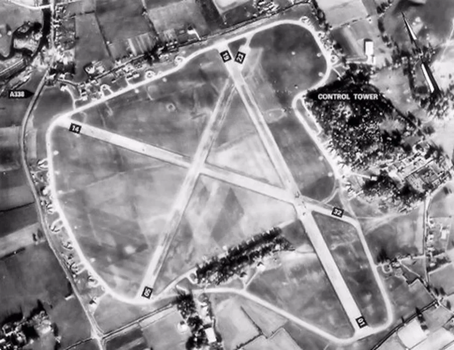
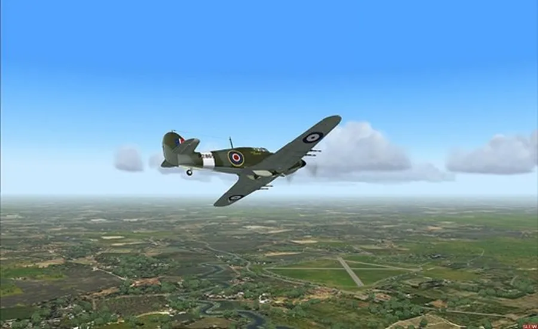
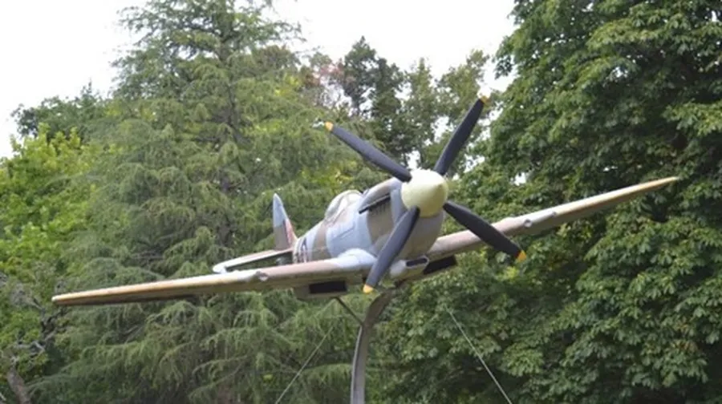
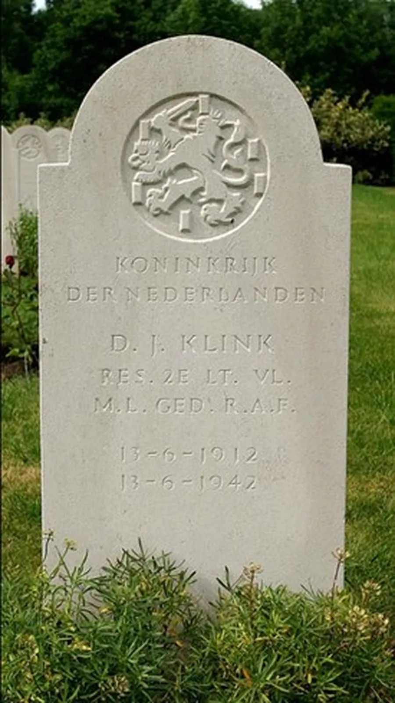

Dirk Jacobus Klink (1912 – 42)
by Adrian King

The area of flooded gravel pits to the south of Ibsley was once the site of a wartime airfield. Ibsley Airfield was constructed by ‘Mowlems’ in 1940 and was not operational until February 1941. It was used by the RAF until the end of 1947. The 8th and 9th U.S. Army Air Force used it for short periods between 1942 and 1945 – it was U.S. Airfield No. 347.
On Saturday 13th June 1942 there were 14 flights by 40 aircraft of RAF 118 Squadron under Fighter Command that were stationed at Ibsley and these consisted of
- Formation flights
- Section attacks
- Camera gun
- Cannon attacks
- Practice interception
It was the latter that led to tragedy. Pilot Officer 2nd Lieutenant Dirk Jacobus Klink – Dutch – who had only joined No. 118 on 23rd May was following his Section Leader F/O Stewart up through cloud when at 3,300 feet he was seen to be lagging.
P/O Klink was flying in ‘Hominis Vis,’ the presentation Supermarine Spitfire Mk 5b R7334 donated by Hovis, when it crashed in Alderholt Park – Fordingbridge – the aircraft bursting into flames and the pilot burning to death. The Spitfire had been previously known as ‘Perfect’ proclaiming the products of H. J. Heinz Ltd.

Seventeen-year-old Ronald Duffet was picking strawberries in the kitchen garden of Alderholt Park House where he worked as a garden boy for Major and Mrs. Mackintosh.
“Suddenly I heard an airplane just above me – on looking up I saw this Spitfire coming out of what I remember as heat haze straight at me with smoke coming from both sides of the plane.”
“I made a rush out of the strawberry bed and the plane seemed to suddenly turn a little to its right which seemed to me to avoid the cottage where the Chauffer – Mr. Ewert Thorne – lived. It went ‘blast’ into the corner of the wood, I should say some quarter mile – might be less – from where I was.”

Desmond Manston, who was in the field next to the wood picking up hay with Ewert Thorne, remembers it vividly.
“The plane was at full throttle and as it banked to the left a distress parachute was released. 'He’s coming right on down here' I said to Ewert, and it flew right into the spinney.
Ronald continues
“I ran out to the crash as quick as my legs would let me but there was nothing anyone could do. When the flames calmed down we found the pilots body mangled up in the cockpit seat, an awful sight.
There were canon and machine gun cartridges going off most of the time that we were there.”
Derek Thorne who lived at Alderholt Mill, and Arthur Rose also saw the crash.
The RAF was quickly on the scene and within hours the tangled remains of the Spitfire were removed on a Queen Mary Low Loader.

The official statement was that the cause of the crash was unknown – P/O Klink lost control in cloud, came out of cloud almost vertically at 1000 ft and was unable to pull out in time.
P/O Klink died on his thirtieth birthday, and the tragedy was all the more poignant because his wife Barbara, had arrived at Ibsley only the day before to spend his birthday with him. They had been married in Kensington in early 1942. Dirk Klink was the second husband she had lost during World War II, the first having been killed by a bomb.
P/O Klink was laid to rest in the Churchyard at Ellingham the following Wednesday. Revd. Catley officiated at the funeral service which was attended by Klink’s widow and other relatives, representatives of the Dutch Government, No. 118 Squadron Officers, escort and firing parties. Sometime later P/O Klink’s body was exhumed and moved from Ellingham Churchyard. He now lies in the Mill Hill Dutch War Cemetery in Middlesex.

Christine Emm says
“The plane caught fire and burnt an oak tree down. Scarring can still be seen on a surviving oak tree at the site. Various digs on the site have revealed scraps of fuselage. The owner of the land has a fuse in his possession from the Spitfire which still works. I myself found a uniform button on the site which we feel proves the pilot remained with the plane.
Dirk Klink’s name can be found on the memorial stone at the former RAF Ibsley near Ringwood, Hampshire, England. Our annual Remembrance Day is 11th November. On that day the Ringwood branch of the Royal British Legion reads out the names from the memorial in a church service and Dirk Klink’s is one of those read.
For many years my husband – Mike Emm – having researched this pilot, placed a red poppy cross on the oak tree on Remembrance Day. Now we take the cross to the Alderholt War Memorial so that Dirk can be part of the Remembrance service.
At the going down of the sun, we will remember him.”
In Feb 2006 after a service at Ringwood which was held on Septuagesima Sunday to commemorate men and women who served at RAF Ibsley, John Smith of the Ringwood British Legion – who had also lived at Alderholt Mill as a lad – brought a cross up to put on the scarred oak tree hit by the plane as it crashed.

Barbara Klink – nee Ayers – was born in Birmingham and grew up in London. She had lost her British Citizenship when she had married Dirk and had to apply for it again after his death. Barbara was posted to Egypt and then went to Canada in 1948 where she married Thomas – Tom – Hanley in 1951.
Compiled from So much sadness, so much fun, a history of Ibsley Airfield pilots and ground crews compiled by Vera Smith of the RAF Ibsley Historical Group and eyewitness accounts.
Chris Hanley from Uxbridge, Ontario – Barbara Klink’s son by her third marriage – and Christine Emm have supplied additional information.